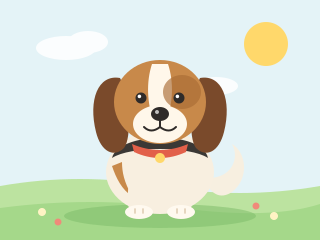

Beagle
- Size
- Small to medium and sturdily built, usually about 33-40 cm (13-16 in) tall at the shoulder and around 9-11 kg (20-25 lb).
- Personality
- Cheerful, curious and friendly. A Beagle loves to follow its nose, enjoys company, and usually gets along well with children and other dogs.
- Everyday Care
- Give a daily walk plus safe sniffing time, and keep the yard fenced because interesting smells can make a Beagle wander. Brush the short coat weekly, check the long ears, and measure meals to avoid extra weight.